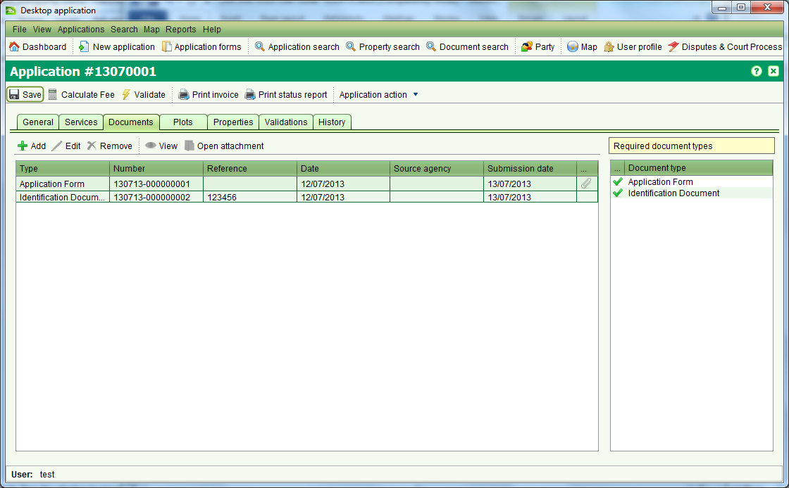
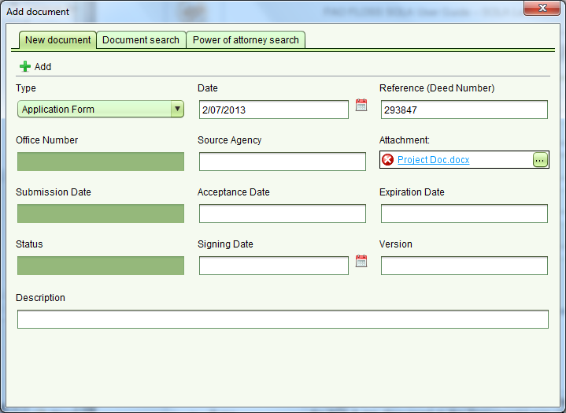

Add Document
Documents are records created in SOLA that capture summary details about legal,
official or other documentation supplied by the agent or applicant to support
their request for changes to the land registry and/or cadastre information.

To add a document to an application, use the
 tool on the Documents tab. This will open the Add Document dialog.
tool on the Documents tab. This will open the Add Document dialog.

Enter the necessary details for the document as required and click
to add the new document to the application. Note that when you click
, the form will be cleared and remain open so that it is ready to capture details
for the next document.
The details that can be captured for the document are:
- Type – Mandatory. The type of document to search. The document
types available for SOLA are discussed in the Document types section of this guide.
- Date – Mandatory. The date printed or written
on the face of the document. This date can be searched if it was
recorded when capturing the document details. If the document
was not dated, then enter today’s date.
- Reference (Deed Number) –Recommended. If the document is a
legal or a government document, it may already have an identifying
reference number or deed number printed or written on the face of it.
This reference number should be entered here. If there is no identifying
number on the document, this field can remain blank
- Office Number –Recommended. The office number field is not editable.
SOLA will automatically assign an office number when the document record is created.
- Source Agency –Optional. The source of the document, e.g. the
name of the firm or bank that created the document. This search
field supports partial and full matching.
- Attachment –Recommended. The name of the file that contains
the image of the document. Use the ellipses button “...” to open
the File Attachment dialog and attach a file.
- Submission Date – Optional. The date the document was first
recorded in SOLA. This field is not editable and is automatically
populated by SOLA. It can be used a search field in the Document Search.
- Acceptance Date – Optional. The date the document was accepted by
the agency or organization that registered the document. Not applicable for all documents.
- Expiration Date – Optional. The date the document will expire. Not applicable for all documents.
- Status – The status of the document. Automatically populated
by SOLA for registered documents like Power of Attorney and Notarial Bonds.
- Signing Date – Optional. The date the document was signed
by all parties. Not applicable for all documents.
- Version – Optional. The version of the document. Not applicable for all documents.
- Description – A description given to the document to provide a
summary of its content. The details of this field can be searched from Document Search.
The Add Document dialog also includes Document Search and Power of
Attorney Search tabs that allow you to search existing SOLA documents
for a file that was previously attached. This can be a useful way to
link registered Power of Attorney documents as well as reference other
documentation that may be relevant to the application. Once you have
located the existing document you wish to link, use
 Select it to add into the application
Select it to add into the application
Steps
- From the Dashboard select the
tool to open the Add Document dialog
- Enter the document type and date
- If an attachment is available or the file to attach has previously
been uploaded into SOLA, click the “...” button in the Attachment field and locate the file.
- Complete any remaining details describing the document as necessary
- Once all of the document details are correct and the appropriate file is
attached, click the
button to add the document to the application. A paperclip icon is displayed
in the documents list to indicate the documents that have attachments
-
 Save the application to ensure the new document is created as well as any file attachment
Save the application to ensure the new document is created as well as any file attachment
Notes
- The Required Document Types list box shows the document types that
must be included with the application. Be sure to add all required documents
otherwise it will not be possible to approve the application.
- If you attach the wrong file as an attachment, use the remove icon
in the Attachment field to remove the file (if prior to Add) or the
 Reset Changes button to remove the document record from the Documents list and re-add it.
Reset Changes button to remove the document record from the Documents list and re-add it.
- If you need to change or update the document details, select the document
in the Documents list and use the
 tool. This will open the Add Document dialog in edit mode.
tool. This will open the Add Document dialog in edit mode.
- Power of Attorney and Standard Documents must be registered in
SOLA before they can be located using the Document searches.
- It is not possible to update the file attachment for Power of Attorney
and Standard Documents. Ensure you link these documents with the appropriate
attachments when the documents are added to the application.
Also See